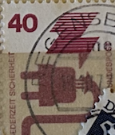
| SOURCE | TITLE| IMAGE MATCH | click to source page |
| eBay | 1974 Accident prevention,Unfall,Electricity,Electric device,Construction,Germany | eBay | 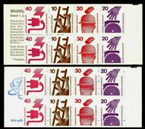 |
| eBay | Lot De Feuilles De Timbres 20 D II Neuf (BUMH 20 D II) | eBay | 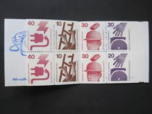 |
| eBay | GERMANY Mi. #MH 20c II mZ rare mint MNH stamp booklet! CV $825.00 | eBay | 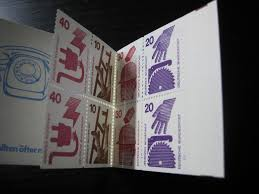 |
| eBay | Deutsche Bundespost - Germany Stamp Booklet 1971 Information About Accidents H47 | eBay | 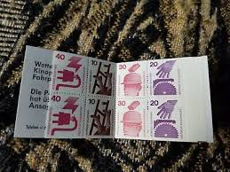 |
| eBay | Stamps Germany, Scott # 1075b used pane | eBay | 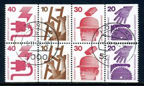 |
| eBay | BRD, 1974 Unfallverhütung Markenheftchen 20c **, (21926) | eBay | 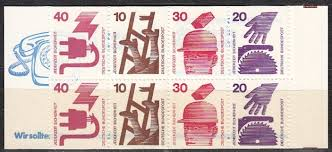 |
| eBay | Stamps Berlin (West) 1974 Mi MH9a with zählbalken (complete issue) un (10578336 | eBay | 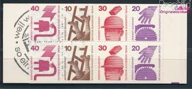 |
| eBay | OOS] Berlin #MiMH9aoZ MNH Booklet 1974 Accident Prevention [9N317a] | eBay | 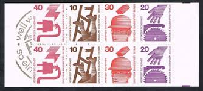 |
| The Itty Bitty Stamp Company | Germany # 1075-1076-1078-1079 Mint Never Hinged – The Itty Bitty Stamp Company | 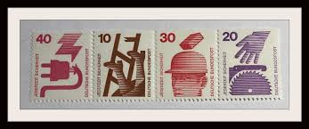 |
| eBay | Stamps FRD (FR.Germany) 1974 Mi MH20d I mZ with zählbalken (complete (10587975 | eBay |  |
| Alamy | Stamp printed in Germany, shows symbol of the Red Cross in a stylized wind rose, circa 1953 Stock Photo - Alamy | 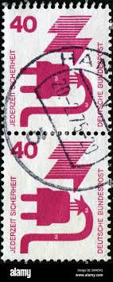 |
| eBay | Germany / Mh 9a Accident Prevention . MNH | eBay |  |
| eBay | Stamp Germany, Scott # 1075c Mint NH complete booklet, precancelled | eBay | 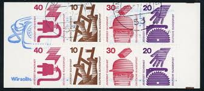 |
| eBay | Germany Scott #1075c VF MNH 1974 Michel Zusammendrucke MH20b II oZ Booklet | eBay | 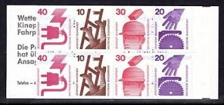 |
| eBay | GERMANY DEUTSCHE BUNDESPOST 1974 ACCIDENT PREVENTION 2DM BOOKLET MNH | eBay |  |
| eBay | Germany 1974 MiNr. W49/50 Accident prevention USED VF | eBay |  |
| Old-Stamps.com | Jederzeit Sicherheit / Deutsche Bundespost 1972 | 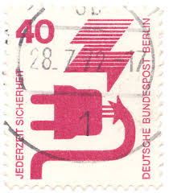 |
| eBay | 1974, Berlin, MH 9 cI oZ, ** - 1784487 | eBay | 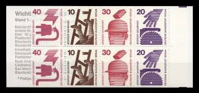 |
| eBay | BERLIN Zusammendrucke Michel: W57, W58, USED Lot24 Cat €24 | eBay | 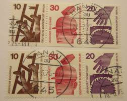 |
| eBay | Germany Mi # MH 9c I Accident Prevention. Pane Booklet . MNH..... | eBay | 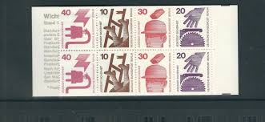 |
| eBay | Germany 1974 MiNr. W50 Accident prevention USED VF | eBay | 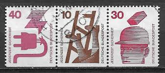 |
| eBay | BERLIN Zusammendrucke Michel: W51, W52, W55, W56, W59, W60, USED Lot24 Cat €54 | eBay |  |
| eBay | Germany and Colonies Business, Industry & Careers Stamps for sale | eBay | 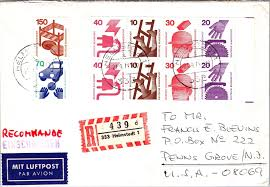 |
| eBay | Bundle W 47, W 48, stamped, Mi. 9,- | eBay |  |
| eBay | Germany 1974 MiNr. W47/48 Accident prevention USED VF | eBay | 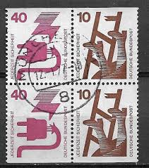 |
| eBay | Bundle W 55 stamped, Mi. 5.50 | eBay |  |
| Dreamstime.com | Vintage US Postage Stamp of President Lincoln Editorial Stock Image - Image of postcard, america: 85362819 |  |
| eBay | BERLIN Zusammendrucke Michel: W53, USED, Lot24, Cat €12 | eBay | 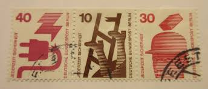 |
| eBay | Germany SC # 1075c Accident Prevention , Michel MH8a . Booklet .MNH | eBay | 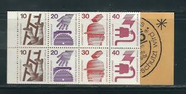 |
| eBay | 1974, Bundesrepublik Deutschland, HBl. 25, gest. - 1613250 | eBay | 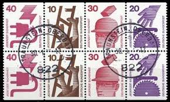 |
| eBay | Germany Stamp Sc 1075b, Singles from Booklet pane, Used CV$11.00 (501G-993) | eBay | 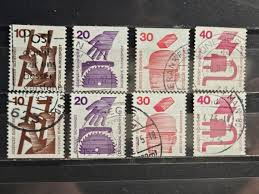 |
| eBay | BERLIN Zusammendrucke Michel: W46, W48, W50, W49, W47, MNH, Lot24, Cat €8.70 | eBay | 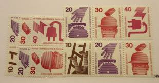 |
| eBay | Germany Scott #1075c VF MNH 1974 Michel Zusammendrucke MH20a I oZ Booklet | eBay | 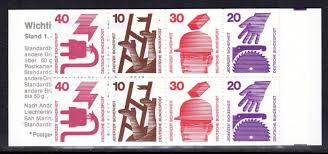 |
| eBay | BERLIN Zusammendrucke Michel: W46, W48, W50, W49, W47, USED, Lot24, €17.40 | eBay |  |
| eBay | GERMANY BERLIN 1974 COMPLETE BOOKLET W/ PANE 2EA OF 10PF 20PF 30PF 40PF MI H39C1 | eBay | 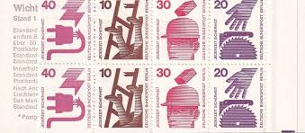 |
| eBay | Germany 1974 MiNr. W53 Accident prevention USED VF | eBay | 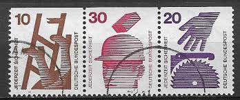 |
| HipStamp | Germany, Berlin, Scott 9N316-9N325, MNH complete set | Europe - Germany & Colonies - West Berlin, General Issue Stamp / HipStamp | 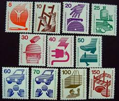 |
| Blitzschwob | German Bookletss | 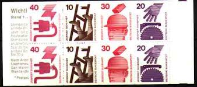 |
| Shutterstock | 6+ Thousand Deutsche Post Royalty-Free Images, Stock Photos & Pictures | Shutterstock | 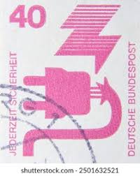 |
| eBay | Berlin MH 9 D I OZ, Mint, Mi. 22,- | eBay | 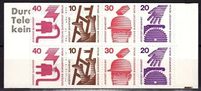 |
| eBay | BERLIN Zusammendrucke Michel: W51, W52, W59, W60, MNH, Lot24 Cat €28 | eBay |  |
| eBay | Germany SC # 1075c Accident Prevention . Booklet Pane .MNH | eBay | 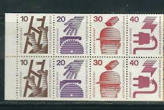 |
| eBay | Germany Scott #1075c VF MNH 1974 Michel Zusammendrucke MH20d I oZ Booklet | eBay | 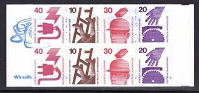 |
| eBay | GERMANY Mi. #MH 20e mint MNH stamp booklet! CV $21.50 | eBay | 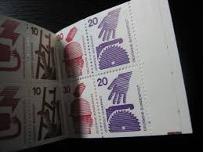 |
| eBay | Germany Scott #1075b VF MNH 1974 Michel Zusammendrucke MH18b | eBay | 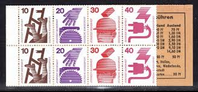 |
| iStock | Rwanda Postage Stamp Syncon Satellite 100 Years International Telecommunications Union Stock Photo - Download Image Now - iStock | 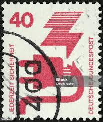 |
| eBay | Germany 1973 MiNr. H-Bl 24 Accident prevention MNH VF | eBay | 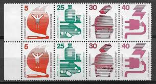 |
| eBay | West Germany - 1971 - Information About Accidents - 40Pfg - Used - #5 | eBay | 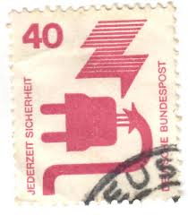 |
| Dreamstime.com | 139 Defective Form Stock Photos - Free & Royalty-Free Stock Photos from Dreamstime | 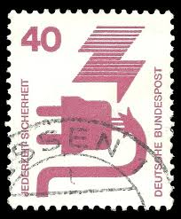 |
| any ideas? : r/AustralianCoins | 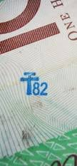 | |
| Dreamstime.com | GERMANY - CIRCA 1971: a Postage Stamp from Germany, Showing Motive for Accident Prevention. Text: Security at All Times Editorial Stock Photo - Image of collection, editorial: 216726423 | 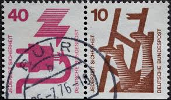 |
| iStock | Ceptstamp25 Stock Photo - Download Image Now - Arts Culture and Entertainment, Border - Frame, Communication - iStock | 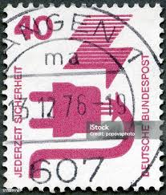 |
| eBay | Germany, small lot of pairs, West Germany | eBay | 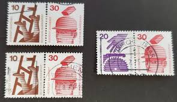 |
| eBay | Unfallverhütung 040, 699 A Ra, 3er Str., schwarze Nr. 575, gest., | eBay | 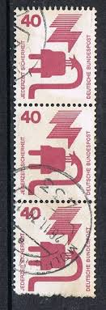 |
| eBay UK | 2 USED GERMANY DEUTSCHE BUNDEPOST 10 & 40 STAMPS POSTMARK IMPERF BASE | eBay UK | 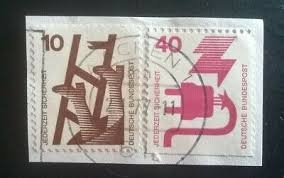 |
| ebid.net | GERMANY, Accidents, Ladder and Saw, pair, brown & violet 1972, 10pf, 20pf on eBid United States | 187888250 | 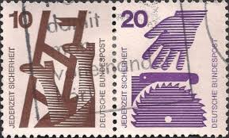 |
| eBay | Germany - 1971 Information About Accidents 10, 40, 100 Pfennig | eBay | 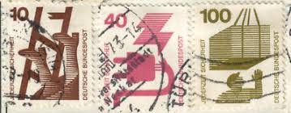 |
| Colnect | Germany, Federal Republic: Booklet Pane-accident prevention, 1974 : US$ 0.50 from CyberstampClub : Stamps Marketplace : Stamps for sale : Colnect | 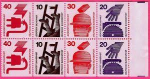 |
| eBay | Germany Scott #1078/1079 VF MNH 1972 Michel Zusammendrucke W42 | eBay | 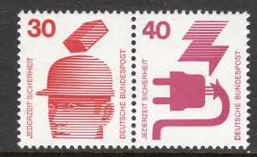 |
| eBay | Germany 1972 40pf DEFECTIVE ELECTRICAL PLUG 1078 MNH TETE-BECHE | eBay |